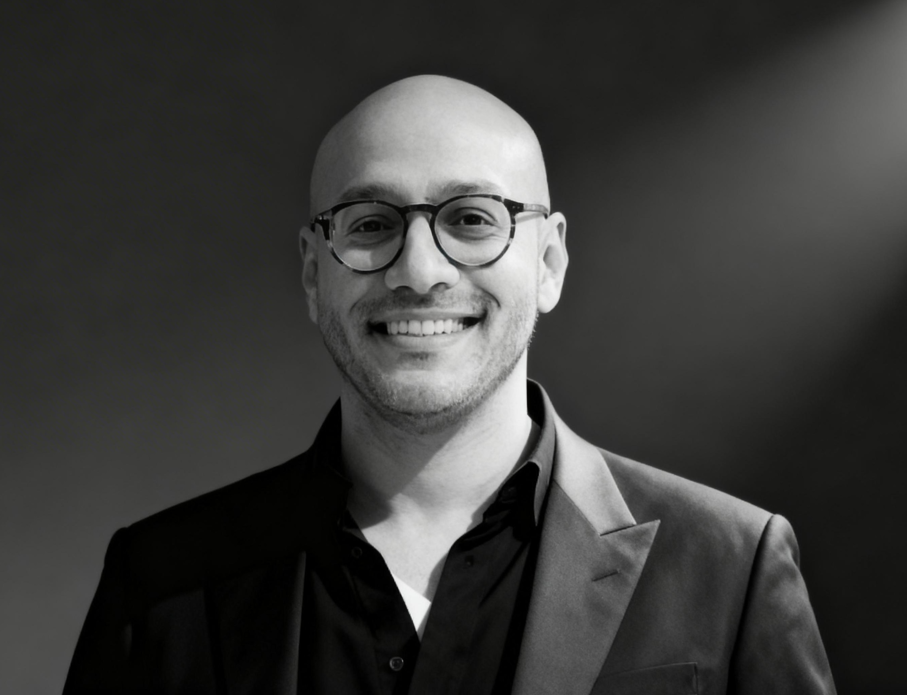

Dr. Moaz Abdelwadoud is a public health researcher, educator, and physician with over fifteen years of experience spanning clinical medicine, health systems research, and global public health practice across the Middle East, Sub-Saharan Africa, Europe, and the United States.
He currently serves as Research Scientist and Senior Director of Training at the Center for Systems & Community Design at the CUNY Graduate School of Public Health and Health Policy, where he leads training initiatives and contributes to research advancing community-engaged and systems-based approaches to improving population health.
He is also an Adjunct Assistant Professor in the Department of Health Policy and Management, where he teaches graduate courses in public health policy, organizational management, and comparative urban health systems, and contributes to the relaunch of the school's Doctor of Public Health program.
Dr. Abdelwadoud also serves as a Public Health Impact Mentor at Firefly Innovations, CUNY's digital health startup accelerator, mentoring early-stage digital health companies on strategy, growth, and health system integration.
His research focuses on health systems and services research, with particular emphasis on patient-centered care, community engagement, and equitable access to health services and health information. His work includes collaborations with the National Institutes of Health, U.S. Food & Drug Administration, U.S. Department of Defense, Veterans Health Administration, and the World Food Programme.
Dr. Abdelwadoud has authored peer-reviewed articles in journals including Military Medicine, International Journal of Environmental Research and Public Health, Pediatric Allergy and Immunology, The Patient, and Public Health Genomics. He serves as a peer reviewer for IJHPM, Value in Health, PLOS ONE, and other leading journals.